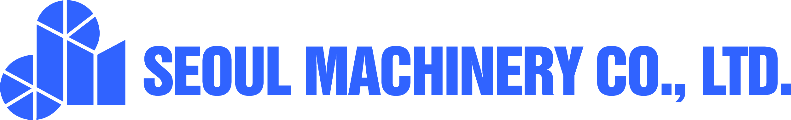

DraftLine 서버에 연결하지 못했습니다
네트워크 상태 또는 서버 주소를 확인한 뒤 다시 시도해 주세요. 이미 열어 둔 도면은 이 기기의 로컬 저장소에 남아 있습니다.
-
- 사내망(또는 VPN)에 연결되어 있는지 확인합니다.
- 서버가 재시작 중이면 잠시 후 다시 시도합니다.
- 주소가 바뀌었다면 아래에 새 주소를 입력합니다.

네트워크 상태 또는 서버 주소를 확인한 뒤 다시 시도해 주세요. 이미 열어 둔 도면은 이 기기의 로컬 저장소에 남아 있습니다.
-